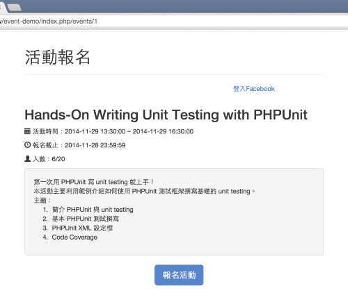
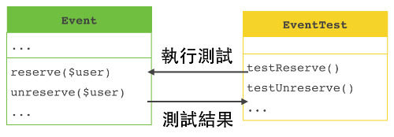

也紀念我們永遠的朋友 李士傑先生（Shih-Chieh Ilya Li）。
第一次用 PHPUnit 寫測試就上手（上）
一、什麼是測試？測試的重要性？
開發者在撰寫程式的時候，程式不大可能會沒有問題，所以通常就需要驗證程式的執行是不是符合預期。測試程式能用來驗證程式程式的運作是不是正常的，並發現程式中的錯誤，以增加軟體品質。
下面是一個活動報名的系統：

這一個活動報名系統主要提供使用者報名活動，在報名活動內還有一些子功能，像是「限制活動報名人數」，如果是這一個子功能，該如何測試呢？
直覺想到可能就需要有 20 個以上的使用者，然後讓這個些使用者分別來報名活動，如果沒超過限制的人數，使用者就能繼續報名，反之，超過了限制人數的話，使用者就無法繼續報名了。說到這裡，會覺得這是什麼測試！
先分析一下，照上面的方法進行測試會有什麼問題：
-
測試案例一多，會花太多時間
- 這時候，如果再增加報名截止日期的測試，這樣又需要再對報名功能測試一次。
-
改了程式碼之後，需要再做一次測試
- 日後維護時，會需要再次修改程式碼，但是，改了程式碼之後，該如何驗證修改後的程式運作上是沒問題的？所以，可能又要再次從頭做一次測試。
-
與其他程式混在一起測試
- 要執行報名功能的程式碼，要透過 view 的程式去呼叫。但是，這樣做測試的時候，如果測試失敗，就必須花時間去找出是報名的程式出問題，還是 view 程式。
那該如何解決這些問題呢？針對開發者來說，需要一個可以自動化、重複的、獨立的測試。
二、單元測試
單元測試是分別對程式的單元，例如：函式 (function)、方法 (method)，進行測試，測試時會判斷單元的執行結果是不是有符合預期。

從上圖可以看到，撰寫了Event 類別提供了兩個方法，reserve()、unreserve()，也就是目標程式。
接著透過 EventTest 的兩個測試案例，testReserve() 與 testUnreserve() 分別來對 Event 類別中的兩個類別方法執行測試，測試的結果會在測試案例中驗證，如果驗證通過，表示測試就成功了！
單元測試能協助開發者什麼？
-
確保單元的執行結果
- 這一點蠻覺得就可以了解到，單元測試能協助驗證目標程式的執行結果。
-
儘早發現程式中的錯誤
- 因為單元測試是在開發的時候就進行的，所以能發現程式中存在的問題。
- 沒使用單元測試的時候，寫好了一份程式，但是，這份程式碼需要與其他程式碼整合才有辦法運作。所以就需要等整個程式開發的差不多的時候，才能對程式進行測試，在測試出現問題的時候，會花許多時間來釐清是那一份程式導致的問題。
- 如果使用單元測試，就能在寫好了一份程式之後進行單元測試，而不用等到之後才對程式測試。
-
修改程式，更加有信心
- 程式寫好了，需要維護、修 bug，如果修改了程式碼後，能確定修改後的程式與之前的正常運作是一樣的嗎？單元測試能協助修改程式後，對程式執行測試，如果測試過了，表示程式的運作是正常的，測試失敗的話，可能需要再回頭修改程式。
-
測試即文件
- 在撰寫測試的時候，會對單元所提供的功能進行驗證，所以，除了能透過程式來瞭解單元的運作外，也能用所撰寫的單元測試來知道，被測試的單元有哪些運作及功能。
- 在開發的時候，會撰寫一些文件來作為軟體的文件，在實際上，有時候那些文件並不一定會隨著程式變更而修改，到後來會變成之前所做的文件跟程式是不同步的。
- 因為，單元測試的程式會對目標程式進行驗證，所以，測試能避免掉傳統文件所造成的程式與文件不同步的問題。
三、簡介 PHPUnit
PHPUnit 是 PHP 程式語言中最常見的單元測試 (unit testing) 框架，PHPUnit 是參考 xUnit 架構利用 PHP 實作出來。
為什麼要使用 PHPUnit 來測試呢？雖然，要做單元測試可以自己寫程式來測試， 但是 PHPUnit 提供了一些測試時常用的 library 及解決測試時會遇到問題的方法，所以我們會使用 PHPUnit 來做單元測試。
四、撰寫 PHPUnit 測試
說明
在進入正題前，先說明範例程式，之後的程式，會利用一個小專案，活動報名系統來示範撰寫單元測試。
活動報名系統主要的功能是提供報名及取消報名。
示範流程：
1. 撰寫目標程式的介面及實作
2. 撰寫單元測試程式碼
3. 執行測試
4. 如果測試失敗，回頭看是實作還是測試程式碼的問題
活動報名系統目錄結構：
.
|-- src
| '-- PHPUnitEventDemo
| '-- Event.php
| '-- User.php
|
|-- tests
'-- EventTest.php上面是範例程式的目錄架構
- PHPUnitEventDemo - 底下都是目標程式碼
- Event.php - Event 類別
- User.php - User 類別
- tests - 單元測試目錄
- EventTest.php - 測試 Event 類別的單元測試
1. Assertions（斷言）
Assertions 為 PHPUnit 的主要功能，用來驗證單元的執行結果是不是預期值。
小範例：
assertTrue(true); # SUCCESSFUL
assertEquals('orz', 'oxz', 'The string is not equal with orz'); #UNSUCCESSFUL
assertCount(1, array('Monday')); # SUCCESSFUL
assertContains('PHP', array('PHP', 'Java', 'Ruby')); # SUCCESSFULassertTrue()：判斷實際值是否為true。assertEquals()：預期值是orz，實際值是oxz，因為兩個值不相等，所以這一個斷言失敗，會顯示The string is not equal with orz的字串。assertCount()：預期陣列大小為 1。assertContains()：預期陣列內有一個PHP字串的元素存在。
從上面的後三個 assertions 可以發現，預期值都是在第一個參數，而後面則是實際值。
● 測試 1 - 提供使用者報名
預期結果：
- 符合的報名人數。
- 報名的名單中有已經報名的使用者。
接下來開始撰寫 User 及 Event 類別。
src/PHPUnitEventDemo/User.php
namespace PHPUnitEventDemo;
class User
{
public $id;
public $name;
public $email;
public function __construct($id, $name, $email)
{
$this->id = $id;
$this->name = $name;
$this->email = $email;
}
}
User 類別很單純，主要就是建立 User 物件用。
src/PHPUnitEventDemo/Event.php
namespace PHPUnitEventDemo;
class Event
{
public $id;
public $name;
public $start_date;
public $end_date;
public $deadline;
public $attendee_limit;
public $attendees = array();
public function __construct($id, $name, $start_date, $end_date, $deadline, $attendee_limit)
{
$this->id = $id;
$this->name = $name;
$this->start_date = $start_date;
$this->end_date = $end_date;
$this->deadline = $deadline;
$this->attendee_limit = $attendee_limit;
}
public function reserve($user)
{
// 使用者報名
$this->attendees[$user->id] = $user;
}
public function getAttendeeNumber()
{
return sizeof($this->attendees);
}
}
Event 類別有兩個要說明的變數，$attendee_limit、$attendees：
$attendee_limit: 活動限制的報名人數。$attendees: 陣列型態，每一個元素為一個User物件。
另外 Event 類別內還主有兩個方法，reserve() 及 getAttendeeNumber()：
reserve(): 提供使用者報名，將報名的使用者存在陣列中，陣列的索引值就是使用者的 id。getAttendeeNumber(): 取得目前報名人數。
最後，我們需要撰寫 EventTest 來測試 Event 的單元結果是不是符合預期。
tests/EventTest.php
class EventTest extends PHPUnit_Framework_TestCase
{
public function testReserve()
{
// 測試活動報名功能
$eventId = 1;
$eventName = '活動1';
$eventStartDate = '2014-12-24 18:00:00';
$eventEndDate = '2014-12-24 20:00:00';
$eventDeadline = '2014-12-23 23:59:59';
$eventAttendeeLimit = 10;
$event = new \PHPUnitEventDemo\Event($eventId,
$eventName, $eventStartDate, $eventEndDate,
$eventDeadline, $eventAttendeeLimit);
$userId = 1;
$userName = 'User1';
$userEmail = '
這個 E-mail 地址已經被防止灌水惡意程式保護，您需要啟用 Java Script 才能觀看
';
$user = new \PHPUnitEventDemo\User($userId, $userName, $userEmail);
// 使用者報名活動
$event->reserve($user);
$expectedNumber = 1;
// 預期報名人數
$this->assertEquals($expectedNumber, $event->getAttendeeNumber());
// 報名清單中有已經報名的人
$this->assertContains($user, $event->attendees);
}
}
EventTest會繼承了 PHPUnit 的類別PHPUnit_Framework_TestCase。EventTest內有一個測試案例testReserve()。testReserve()內主要會建立一個User及Event物件，使用者再去報名一個活動，所以活動已經有一個人報名了。- 接下來的斷言，
assertEquals()會預期活動報名人數有 1 個人。 assertContains()預期在活動報名清單內，已經有已報名的使用者。
執行測試
$ phpunit --bootstrap vendor/autoload.php tests/EventTest
PHPUnit 4.4.0 by Sebastian Bergmann.
.
Time: 56 ms, Memory: 3.25Mb
OK (1 test, 2 assertions). 表示測試了一個測試案例，且通過測試。
● 測試 2 - 提供使用者取消報名
活動除了可以讓使用者報名外，也能取消報名，但是要測試取消報名需要有人報名才能取消。
實作取消報名
src/PHPUnitEventDemo/Event.php
namespace PHPUnitEventDemo;
class Event
{
// ignore ...
public function unreserve($user)
{
unset($this->attendees[$user->id]);
}
}
取消報名的實作很簡單，因為 Event 物件的 $attendees 陣列索引值為使用者的 id，所以使用者要取消報名時，只要將 $attendees 對應到使用者 id 陣列索引值的元素給刪掉。
tests/EventTest.php
class EventTest extends PHPUnit_Framework_TestCase
{
/**
* 不應該把兩個不同的測試放在一起
*/
public function testReserveAndUnreserve()
{
$eventId = 1;
$eventName = '活動1';
$eventStartDate = '2014-12-24 18:00:00';
$eventEndDate = '2014-12-24 20:00:00';
$eventDeadline = '2014-12-23 23:59:59';
$eventAttendeeLimit = 10;
$event = new \PHPUnitEventDemo\Event($eventId, $eventName, $eventStartDate, $eventEndDate, $eventDeadline, $eventAttendeeLimit);
$userId = 1;
$userName = 'User1';
$userEmail = '
這個 E-mail 地址已經被防止灌水惡意程式保護，您需要啟用 Java Script 才能觀看
';
$user = new \PHPUnitEventDemo\User($userId, $userName, $userEmail);
// 使用者報名活動
$event->reserve($user);
$expectedNumber = 1;
// 預期報名人數
$this->assertEquals($expectedNumber, $event->getAttendeeNumber());
// 報名清單中有已經報名的人
$this->assertContains($user, $event->attendees);
// 使用者取消報名
$event->unreserve($user);
$unreserveExpectedCount = 0;
// 預期報名人數
$this->assertEquals($unreserveExpectedCount, $event->getAttendeeNumber());
// 報名清單中沒有已經取消報名的人
$this->assertNotContains($user, $event->attendees);
}
}
把報名與取消報名的功能放在同一個測試案例內，這樣是不好的做法，因為，單元測試是分別對每一個單元做驗證，所以需要把報名與取消報名的功能分開測試，寫成不同的測試案例。
該如何將報名與取消報名測試分開呢？往下一個部分 Test Dependencies 看下去。
2. Test Dependencies（相依測試）
相依測試，如果有兩個測試案例，具有相依關係，就可以使用 test dependencies 在兩個測試案例建立相依關係。
承接上面要把報名與取消報名測試分開的問題，可以將報名與取消報名分成兩個測試案例，讓取消報名的測試相依於報名的測試。
tests/EventTest.php
class EventTest extends PHPUnit_Framework_TestCase
{
public function testReserve()
{
$eventId = 1;
$eventName = '活動1';
$eventStartDate = '2014-12-24 18:00:00';
$eventEndDate = '2014-12-24 20:00:00';
$eventDeadline = '2014-12-23 23:59:59';
$eventAttendeeLimit = 10;
$event = new \PHPUnitEventDemo\Event($eventId, $eventName, $eventStartDate, $eventEndDate, $eventDeadline, $eventAttendeeLimit);
$userId = 1;
$userName = 'User1';
$userEmail = '
這個 E-mail 地址已經被防止灌水惡意程式保護，您需要啟用 Java Script 才能觀看
';
$user = new \PHPUnitEventDemo\User($userId, $userName, $userEmail);
// 使用者報名活動
$event->reserve($user);
$expectedNumber = 1;
// 預期報名人數
$this->assertEquals($expectedNumber, $event->getAttendeeNumber());
// 報名清單中有已經報名的人
$this->assertContains($user, $event->attendees);
return [$event, $user];
}
/**
* @depends testReserve
*/
public function testUnreserve($objs)
{
$event = $objs[0];
$user = $objs[1];
// 使用者取消報名
$event->unreserve($user);
$unreserveExpectedCount = 0;
// 預期報名人數
$this->assertEquals($unreserveExpectedCount, $event->getAttendeeNumber());
// 報名清單中沒有已經取消報名的人
$this->assertNotContains($user, $event->attendees);
}
}
把原本的testReserveAndUnreserve() 拆成兩個測試：
testReserve(): 測試報名功能testUnreserve(): 測試取消報名
Producer 與 Consumer
testUnreserve() 在註解內有利用 @depends testReserve() 標註相依於 testReserve() 測試，而被相依的測試可以當作 producer，將值傳給相依的測試 testUnreserve() 為 consumer，透過引數接收。
這樣就能將報名 testReserve() 與取消報名 testUnreserve() 測試分開，testUnreserve() 會接收來自 testReserve() 的回傳值，為一個兩個元素的陣列，陣列的第一個元素為，已經有人報名的 Event 物件，第二個元素為 User 物件，是已經報名的使用者。
如果 testReserve() 執行失敗，testUnreserve() 會執行嗎？
是不會的，當被相依的測試案例如果測試失敗，那相依的測試就會忽略執行。
我們可以試著將 testReserve() 故意測試失敗，只要將針對 Event 物件的 getAttendeeNumber() 斷言的預期值，從 1 改成 0 就可以讓 testReserve() 測試失敗，接著再執行測試：
$ phpunit --bootstrap vendor/autoload.php tests/EventTest
PHPUnit 4.4.0 by Sebastian Bergmann.
FS
Time: 73 ms, Memory: 3.50Mb
There was 1 failure:
1) EventTest::testReserve
Failed asserting that 1 matches expected 0.
/Users/aming/git/Hands-On-Writing-Unit-Testing-With-PHPUnit/tests/EventTest.php:15
FAILURES!
Tests: 1, Assertions: 2, Failures: 1, Skipped: 1.（待續...）
您也許有興趣閱讀以下文章:
- 第一次用 PHPUnit 寫測試就上手（下） - 2014-12-29
專欄總覽


E-Mail：contact@openfoundry.org Address：台北市南港區研究院路2段128號 中央研究院資訊科學研究所 . 隱私權條款. 使用條款